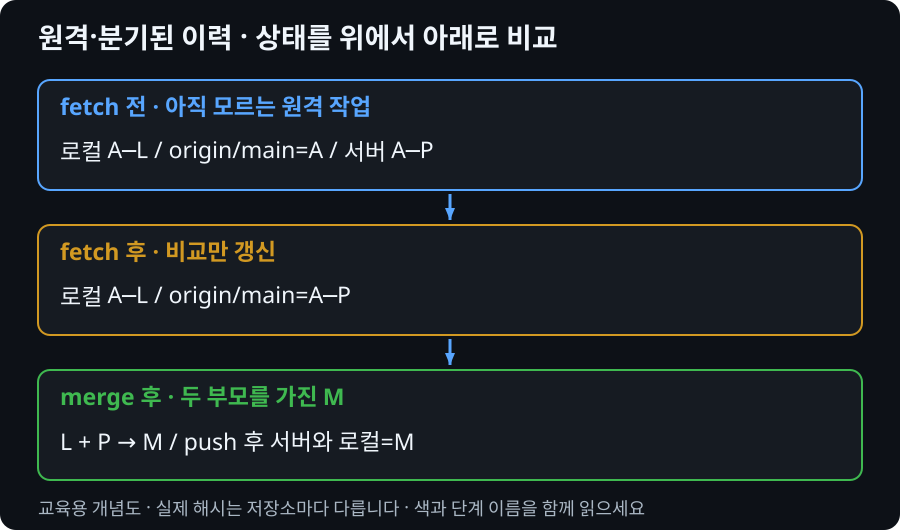

환경 세팅
Git Bash 설치부터 GitHub 계정 연동까지, 실습을 시작하기 위한 모든 준비를 합니다.
- Git Bash를 설치하고 기본 설정을 완료할 수 있다
- GitHub 계정을 만들고 Git Credential Manager로 안전하게 인증할 수 있다
git config로 사용자 정보를 설정할 수 있다- Fork(GUI 도구)를 설치하고 이해할 수 있다
1. Git 설치
$ git --version
git version 2.43.0.windows.1버전 번호가 출력되면 설치 성공! 버전이 2.x대이면 모두 괜찮습니다.
프로젝트에서 연결해 이해하기 · 원격·분기된 이력
다른 PC의 변경을 받으려는데 현재 PC에도 새 커밋과 미커밋 작업이 있습니다. pull을 반복하기 전에 파일 변경과 커밋 분기를 따로 처리해야 합니다.
origin은 원격 주소에 붙인 이름입니다. origin/main은 서버를 실시간으로 들여다보는 창이 아니라 마지막 통신에서 갱신한 로컬 원격 추적 참조입니다. 최신 비교를 하려면 fetch가 먼저 필요합니다.
fetch는 필요한 객체를 받고 원격 추적 참조를 갱신합니다. 현재 로컬 main과 작업 파일을 자동 통합하지 않습니다. pull은 fetch 뒤 통합 단계를 수행하며 설정에 따라 merge 또는 rebase가 선택될 수 있습니다.

2. Git 사용자 정보 설정
Git은 커밋을 기록할 때 누가 만들었는지를 반드시 함께 저장합니다. 아래 명령어로 이름과 이메일을 설정해야 합니다.
사용자 이름과 이메일 설정
# 이름 설정 (GitHub에 표시될 이름)
$ git config --global user.name "홍길동"
# 이메일 설정 (GitHub 계정 이메일과 동일하게)
$ git config --global user.email "hong@example.com"
# 기본 브랜치 이름을 main으로 설정 (권장)
$ git config --global init.defaultBranch main
# 설정 확인
$ git config --list
user.name=홍길동
user.email=hong@example.com
init.defaultbranch=main
...GitHub 계정 이메일과 동일한 이메일을 입력하세요. 다르면 GitHub에서 커밋을 내 계정과 연결하지 못합니다.
3. GitHub 계정 생성 & 브라우저 인증
Windows용 Git에 포함된 Git Credential Manager를 사용하면 처음 HTTPS push 때 브라우저에서 GitHub에 로그인할 수 있습니다. GCM이 인증정보와 2단계 인증을 안전하게 처리하므로 수업에서는 토큰을 직접 만들어 메모장에 저장하지 않습니다.
브라우저가 열리지 않거나 오래된 자격증명 오류가 날 때만 강사와 함께 Credential Manager 상태를 확인합니다.
PAT는 GCM을 사용할 수 없는 예외 상황에서만 사용합니다. 필요하면 저장소와 기간을 최소화한 fine-grained token을 선택하고 채팅·교안·저장소에 값을 남기지 않습니다.
4. Fork — GUI 도구 소개
이 강의는 Git Bash(CLI)로 실습합니다. 하지만 내부 동작을 시각적으로 확인할 수 있는 GUI 도구 Fork도 함께 소개합니다.
Fork 설치
https://git-fork.com 에서 다운로드 → 설치 시 이름/이메일 입력 (git config와 동일하게)
Fork 없이도 모든 실습 가능합니다. Fork는 Git의 동작을 눈으로 확인하는 용도로만 사용합니다.
5. Windows 인증 정보 관리
GitHub에 처음 HTTPS push할 때 Git Credential Manager가 브라우저 로그인을 엽니다. 먼저 설치 상태를 확인합니다.
# 현재 자격증명 도우미 확인
$ git config --show-origin --get-all credential.helper
# push 시 안내에 따라 브라우저에서 GitHub 로그인
$ git push -u origin 브랜치명오류 메시지와 위 설정 결과를 보존한 뒤 강사에게 공유합니다. 임의로 credential helper를 덮어쓰거나 토큰을 채팅에 붙여넣지 않습니다.
git --version 명령어가 정상 출력된다git config --global로 설정했다git --version
git config --global user.name "이름"
git config --global user.email "이메일"
git config --list